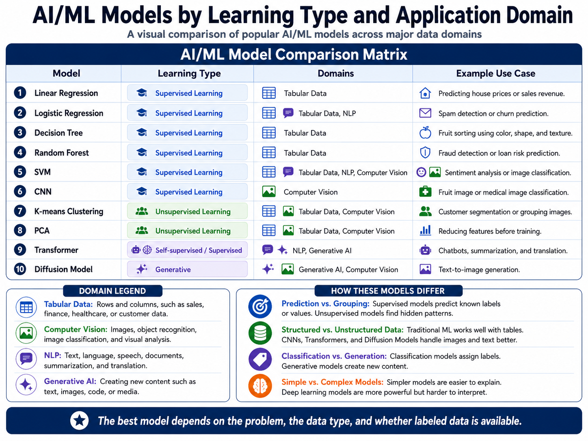

Workshop 1.5 · Machine Learning
Popular AI/ML Models
This artifact presents a visual framework of popular AI and machine learning models used across tabular data, computer vision, natural language processing, and generative AI. The goal is to make these models easier to compare by showing their learning type, common application domains, real-world use cases, and basic working process.
Visual Framework
The visual framework compares ten AI/ML models by learning type, application domain, use case, and a brief explanation of how each model works. It also shows how the models relate to or differ from one another across supervised learning, unsupervised learning, and generative or self-supervised learning.

Description
The framework includes ten AI/ML models: Linear Regression, Logistic Regression, Decision Tree, Random Forest, Support Vector Machine, K-means Clustering, Principal Component Analysis, Convolutional Neural Network, Transformer, and Diffusion Model. Each model is classified by learning type, application domain, example use case, and a short explanation of how it works.
The visual is organized around learning types and application domains so the models are easier to compare. This structure helps show which models are commonly used for tabular data, computer vision, natural language processing, and generative AI.
Objective
The objective of this artifact is to demonstrate an understanding of common AI/ML models and how they are used in different real-world domains. It also shows that model selection depends on the data type, the availability of labels, and the goal of the project.
Process
I started by reviewing popular AI and machine learning models used across different data types. Then I grouped the models by their main learning types: supervised learning, unsupervised learning, and generative or self-supervised learning.
After that, I connected each model to one or more application domains, including tabular data, computer vision, NLP, and generative AI. For each model, I identified the learning type, relevant domain, real-world use case, and a simple explanation of how it works. Finally, I organized the content into a visual framework so the models could be compared clearly.
Tools and Tech Used
- GitHub Pages
- HTML
- CSS
- JavaScript
- Google Slides
- Machine learning course materials
- AI/ML model comparison research
Value Proposition
This artifact simplifies the process of comparing AI and machine learning models by organizing them by learning type, application domain, use case, and basic working process. Instead of presenting the models as separate definitions, the framework shows how they connect to real-world data problems.
The unique value of this artifact is that it makes model selection easier to understand. It shows that supervised models are useful when labels are available, unsupervised models help discover hidden patterns, and generative models create new content. This is relevant because choosing the right model is one of the most important steps in an AI or machine learning project.
Reflection
This assignment helped me understand that AI and machine learning models are not interchangeable. Each model is designed for a different type of data and a different kind of problem. For example, Linear Regression and Random Forests are useful for structured tabular data, while Convolutional Neural Networks are better suited for image-based tasks. Transformers are especially important for NLP and generative AI because they can understand context and relationships between words or tokens.
One of my biggest takeaways was that the learning type matters. Supervised models are useful when labeled data is available. Unsupervised models are helpful when the goal is to find hidden groups or reduce complexity. Generative models are different because they are used to create new content, such as text or images.
This artifact also helped me think more clearly about model selection. A model that works well for tabular data may not be the best option for images or text. Overall, this visual framework helped me explain popular AI/ML models in a way that is simple, organized, and useful for a professional portfolio.
References
IBM. (n.d.). What is machine learning? IBM. https://www.ibm.com/topics/machine-learning
Google Cloud. (n.d.). What is a transformer model? Google Cloud. https://cloud.google.com/discover/what-is-a-transformer-model
Microsoft Azure. (n.d.). What is computer vision? Microsoft Azure. https://azure.microsoft.com/en-us/resources/cloud-computing-dictionary/what-is-computer-vision
NVIDIA. (n.d.). What is a diffusion model? NVIDIA. https://www.nvidia.com/en-us/glossary/ai-machine-learning/diffusion-model/
OpenAI. (2026). ChatGPT [Large language model]. https://chatgpt.com/